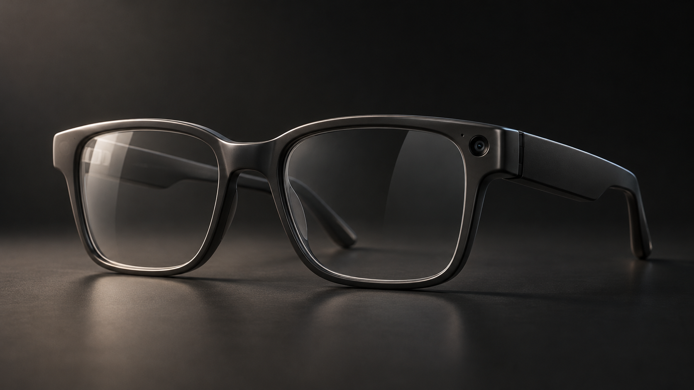
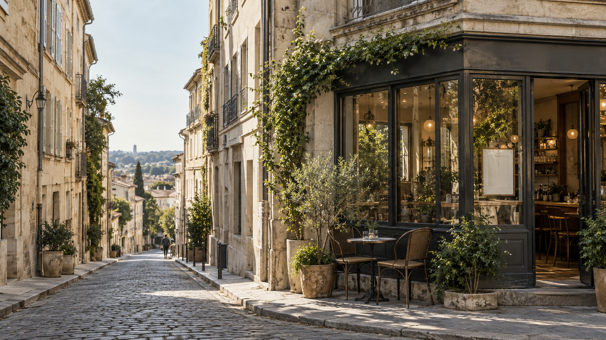

01. Hardware com presença
Acetato fosco, vidro, reflexos contidos. Fundo grafite e recortes macro valorizam a construção sem inventar autonomia, peso ou certificações.
Experience direction / 08.10.2026
Proposta · não implementaçãoDireção visual 01 / Estudo para aprovação
O objeto primeiro. A inteligência no momento certo. Uma experiência editorial de hardware que abre espaço para o mundo real.
01 / A primeira impressão
Composição desktop · conceito de hero

Meet OLVR ONE
A familiar shape.
An entirely new way to see.
Acetato fosco, vidro, reflexos contidos. Fundo grafite e recortes macro valorizam a construção sem inventar autonomia, peso ou certificações.
Hierarquia grande, poucos elementos simultâneos e alternância de superfícies escuras e claras. Um capítulo por ideia, sem mosaico de cards SaaS.
A interface espacial aparece apenas dentro das demonstrações. Um destino, uma resposta, uma tradução — sempre ligados ao que a pessoa vê.
02 / Do objeto ao ponto de vista
Mesma cena · três histórias curtas
Uma rua fictícia une navegação, visão e tradução. HUD legível, com fundo localizado; o ambiente continua sendo o protagonista.

Café nearby
On your rightA little direction. Right when you need it.
03 → SPATIAL / NAVIGATION
Uma indicação vinculada ao café próximo visível. O controle explícito World / OLVR compara a cena original com a simulação na experiência futura; os botões desta prancha são uma ilustração estática. “Try OLVR” usa essa mesma cena.
Information where you need it.04 → AI VISION
Botão com pergunta predefinida, feedback “Looking…” e resposta curta. Sem microfone, câmera do usuário, input livre ou chamada de IA. Repetir e reiniciar sempre disponíveis.
“What am I looking at?”
“A corner café with a limestone façade.”05 → LIVE TRANSLATION
Menu com texto controlado e legível, também no recorte mobile. Original e tradução aparecem juntos neste estudo para avaliar o conteúdo; os modos finais mostram uma tarefa por vez. A cena AR completa ainda depende do aceite da primeira fatia.
“Café du jour” → “Coffee of the day”03 / Uma escolha que se vê
Obrigatório · estado ilustrado, ainda não interativo
OLVR ONE / Your perspective
Contrato visual: primeira fatia com quatro combinações reais: Obsidian/Clear, Titanium/Sun, Sand/Adaptive e Obsidian/Sun. O pack 3 × 3 depende do aceite. “Adaptive” é uma aparência fixa explicitamente simulada, sem transição de tonalidade.
Contrato de interação: quatro radios nativos na fatia, foco visível e rótulos persistentes. Seleção solicitada e preview exibido separados: preservar e identificar imagem anterior durante loading, erro com retry e reset. Confirmação visual só após decode da última escolha.
04 / Mobile é uma composição própria
Estudos de viewport estreito · aproximadamente 390 px
Produto reenquadrado, capítulos curtos e controles ao alcance. Scroll nativo, sem hover obrigatório, giroscópio, drag exclusivo ou longas sequências presas.
A familiar shape.
An entirely new way to see.
Headline e óculos aparecem juntos. Recorte próprio para o hero final; CTA com alvo confortável. Menu simples com âncoras.
Café nearby
On your rightBotões explícitos trocam a demo. Swipe pode ser atalho, nunca o único controle. HUD preserva o campo de visão e o contraste.
Preview compacto acompanha as opções sem ocupar toda a tela. Radios terão alvos de pelo menos 44 px na implementação.
Arco completo / Scroll com capítulos e âncoras
Conteúdo em inglês · documentação em português
05 / Quatro momentos, uma linguagem
Tempos abaixo são intenção a validar em protótipo
GSAP + ScrollTrigger como único motor; CSS para feedback simples. Scroll nativo. Conteúdo completo permanece disponível com reduced motion e sem WebGL.
Produto já visível no primeiro paint. Luz e deslocamento curto completam o reveal. Em reduced motion, composição final imediata.
Recorte da lente dá lugar à rua em crossfade. Desktop admite sticky curto; mobile usa transição entre capítulos, sem pinning longo.
HUD aparece perto do alvo após ação explícita. “Looking…” dura apenas o necessário para ler a simulação. Sem scanning infinito.
Crossfade entre previews com geometria alinhada. Feedback da seleção é imediato. Reduced motion troca a imagem sem transição.
Grafite #101210, ivory #F2F0E8 e acento vegetal #D9EC8B. O acento orienta ações; o contraste vem das superfícies e da escala, não de brilho.
Grotesca de proporções firmes, peso regular, tracking contido e números monoespaçados nos rótulos. A prancha usa fontes do sistema, sem requisições externas. A aplicação usa Manrope Variable local (SIL OFL 1.1), com licença registrada. Recortes e marcadores derivam da lente/HUD.
Footer da experiência: “Independent product concept. Not available for purchase.” CTA final: retornar ao configurador ou explorar o projeto; sem compra, lista de espera ou coleta fictícia de contatos.
Navegação por âncoras, skip link, landmarks, foco visível e menus operáveis por teclado. Demos anunciadas como simulação, transcrição textual e resposta em região de status discreta. Alvos de toque ≥44 px; contraste medido no produto final.
Loading preserva proporções e preview. Falha de imagem mantém descrição e permite retry. Estado inicial da demo convida à primeira ação; sucesso tem replay/reset. Sem captura de sensores ou permissões. Nenhuma informação importante depende apenas de animação.
Desktop e mobile revisados em browser, incluindo teclado, reduced motion e interações reais. Confirmar as quatro combinações da fatia, fechamento/retorno de foco do menu, ausência de overflow e mensagens de erro. As nove combinações entram somente após aceite.
Imagem hero priorizada; demais assets e motion carregados por capítulo. Medir LCP, CLS, INP, memória e fluidez em cenário mobile realista antes de aprovar 3D. Esta prancha estática não comprova esses resultados.